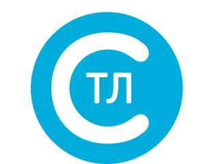

⚡️ Включаем аппарат «Дельта» — простая инструкция за 60 секунд! В этом ролике покажем, как подготовить к работе аппарат ультразвуковой терапии «Дельта»: от подключения к сети до начала процедуры. Всего несколько простых шагов, и с первого раза всё получится. Для подключения соедините штекер сетевого адаптера…

CleanExpo Moscow 2026 · Россия · Зал №3 · Стенд A610
Павильон №1
КОМПАНИЯ СТЛ
Дата среза карточки: 16.11.2026 11:13
Посмотреть официальную схему →
Бренды из карточки
Меркурий, Феникс, Дельта
Контакты
Контактные сведения из карточки
Регион: г. Москва · Адрес: Москва, ул. Люблинская, д. 42, офис 229
Публикации связанных каналов
🔥 Распаковываем аппарат ультразвуковой терапии «Дельта»! 🔥 Что входит в комплектацию: ✅ Сам аппарат – компактный и портативный (всего 200 × 50 × 70 мм, вес 193 г), в корпусе из прочного АБС пластика. Удобный в работе: кнопочное управление и понятные индикаторы времени и интенсивности.…
🧲 Как работает магнитотерапия? Мягко, но эффективно! Низкочастотная магнитотерапия – метод физиотерапии: низкочастотное магнитное поле запускает естественные процессы восстановления без лишней нагрузки. Польза: ✅ Улучшает кровообращение и питание тканей ✅ Снимает отёки, уменьшает воспаление ✅ Обезболивает за счёт влияния на нервные окончания ✅ Ускоряет заживление…
🔍 Как быстро проверить, что аппарат «Вега Плюс» работает правильно? Не нужно быть инженером – проверка займёт пару минут. Вот короткий чек-лист. ✅ Приготовьте тестовый магнит из комплекта ✅ Вставьте кабель любого пояса в разъём Канала 1. Убедитесь, что кабель подключен плотно, без люфта ✅…

Восстановление после перелома — «Вега Плюс» Пациент с переломом (отломки сопоставлены, гипс наложен) сталкивается с отёком, болью, а после снятия гипса — с тугоподвижностью и ослаблением мышц. Сращение идёт через костную мозоль и зависит от кровоснабжения зоны перелома. Стандарт процедура лечения: иммобилизация/операция с фиксацией, далее…
Запускаем в работу аппарат магнитотерапии «Вега Плюс» Сначала подключаем адаптер питания к аппарату и в розетку 220 В. Важно – всегда используйте адаптер питания, входящий в комплект аппарата «Вега Плюс». Дальше выбираем нужный пояс (с 3 или с 2 магнитами) и вставляем кабель пояса в…
🔥 Распаковываем аппарат магнитотерапии «Вега Плюс» и начинаем знакомиться! 🔥 Что входит в комплектацию: ✅ Сам аппарат – компактный, имеет современный корпус, выглядит солидно и удобный интерфейс. ✅ Руководство по эксплуатации – простое понятное содержание для эффективного применения. ✅ Наличие двух разных поясов с магнитными…
🔥 Распаковываем аппарат «Дельта Комби ПРО» — два вида физиотерапии в одном устройстве! 🔥 Вы увидите: ✅ сам аппарат «Дельта Комби ПРО» — компактный, с интуитивно понятной панелью управления; ✅ самоклеящиеся электроды 5×10 — 2 шт., готовые к применению; ✅ провод — для подключения электродов;…
Дисплей аппарата «Меркурий» — разбираем доступно и понятно! 📲 В ролике — простыми словами про дисплей аппарата: что значат иконки и параметры (режим, зона, интенсивность, таймер), как меняются данные при выборе пользователя и что означают уведомления. Покажем примеры экранов для разных зон воздействия. 👉 Смотрите…
⚡ Включаем аппарат «Меркурий» — простая инструкция за 60 секунд! ⚡ В этом ролике покажем, как правильно запустить аппарат нервно‑мышечной стимуляции — без путаницы и лишних движений. Всё разберём по шагам — справился с первого раза. Что будет в видео: ✅ как выбрать программу пользователя…
Происхождение данных
Источники:
Официальный интерактивный план CleanExpo Moscow 2026 · 2026-11-16 · Название и стенд A610 сверены по строке плана.
Официальная карточка участника CleanExpo · 2026-11-16 · Описание, регионы, бренды и контактные поля взяты из публичной карточки.